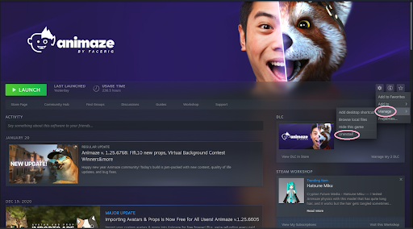
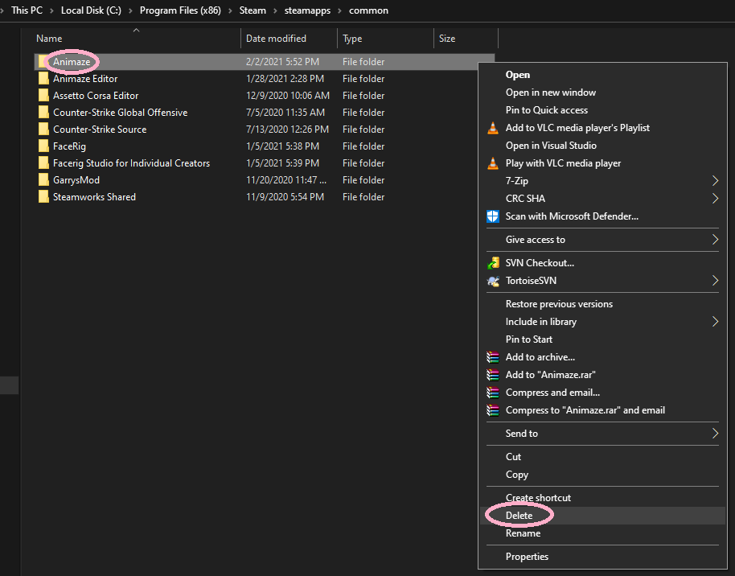
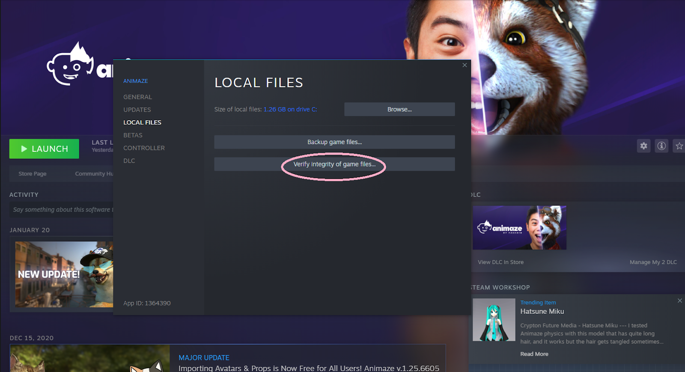

Animaze Desktop: How can I do a clean re-install?
If you're having issues with the app and you want to reinstall it, make sure you do a clean re-install. Here are the steps to do it:
1. Uninstall Animaze from Steam. To do so you will need to Right-click on Animaze > Manage > Uninstall

2. Go to Steam\steamapps\common and delete the Animaze folder

3. Re-install Animaze
4. Close Steam and re-launch it using administrator rights
5. Right-click on Animaze in Steam > Properties > Local Files > Verify Integrity of Application Files

Let it run and launch Animaze again after the files have been verified.
If Animaze is otherwise not launching or is not installing, make sure that your firewall isn't blocking Steam or Animaze. Additionally, try right-clicking on Animaze in the software list, on your Steam Library > Properties > Navigate to Local Files > Verify Integrity of Application Files, then let it run or download and try again.
If none of the above tricks work, we will need to investigate further. To investigate this, please send us at support[@]animaze[.]us we will need the following files:
- C:\Program Files (x86)\Steam\logs\runprocess_log
- C:\Program Files (x86)\Steam\logs\installscript_log
- C:\Program Files (x86)\Steam\logs\appinfo_log
- C:\Program Files (x86)\Steam\steamapps\common\Animaze\Data\Animaze.log
- Dxdiag - press Window key + R, type dxdiag, hit run, save all of the information in a text file.